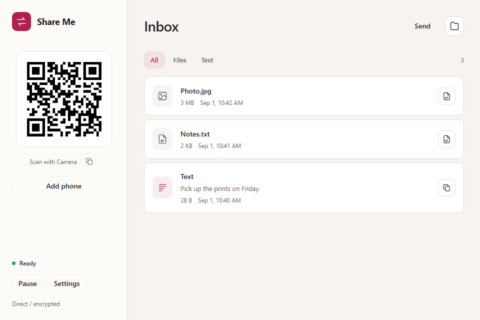
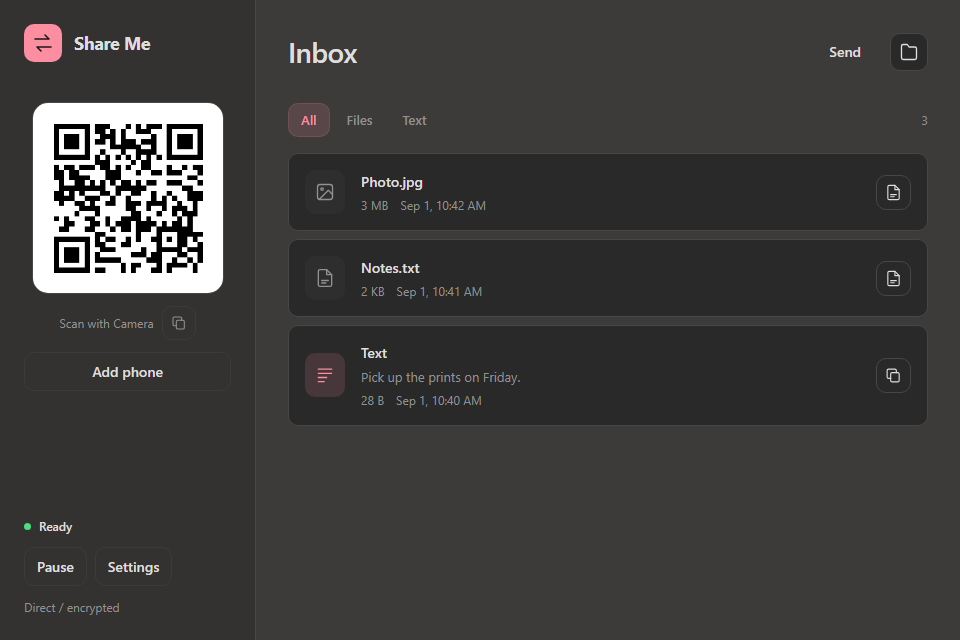
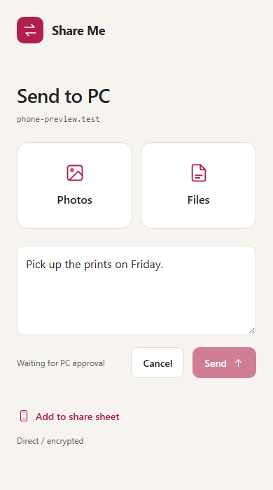
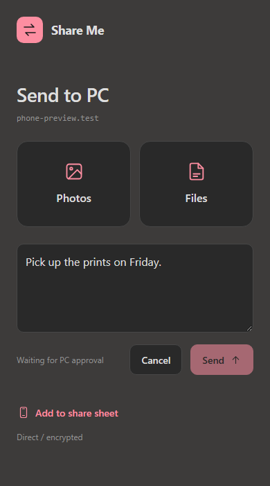

Transfer files between
iPhone and Windows.
A Windows app and a phone web page.
Photos, files, and text over your local network.
Open-source preview · Windows x64
Windows download not published yet.
The app
App screenshots · Example content



To send from Windows, choose Send, then Accept Transfer on your phone.
Setup
Connect both devices to the same network. Keep your PC awake and the phone page open.
Setup guideOpen Share Me
Run
ShareMe.exeon Windows. Allow private-network access if Windows asks.Scan with your iPhone
Use Camera to open the QR link in Safari. Click Connect on Windows.
Send files or text
Choose photos or files, or paste text. Click Accept on Windows.
How transfers work
Files and text use a direct, encrypted connection between the devices.
What goes through the cloud?
The phone page and encrypted connection setup use Cloudflare. Files and transfer text travel directly between paired devices over encrypted WebRTC. Internet access is needed to get connected; there is no cloud file-relay fallback.
What happens before a file is saved?
You accept it on Windows. Share Me then checks the file, scans it with Windows Defender, and applies Windows attachment protection before saving. Files never open automatically. No scanner catches every threat; only accept files you expect.
Can I send from the iPhone share sheet?
A reusable Apple Shortcut is in development. It isn't published yet; Apple signing and real-iPhone setup checks are still required. Use the phone page for now.